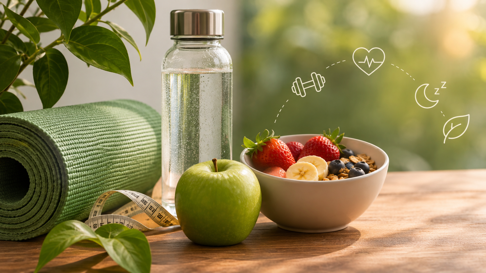

Mais variedade
Experimente combinar frutas, legumes, verduras, grãos e outras opções que façam parte da sua rotina.
Uma alimentação variada pode incluir diferentes cores, sabores e grupos de alimentos. O equilíbrio também considera cultura, rotina e preferências.

Experimente combinar frutas, legumes, verduras, grãos e outras opções que façam parte da sua rotina.
Quando possível, reserve um momento tranquilo para as refeições e perceba sabores e texturas.
Manter água por perto pode ajudar a lembrar de beber ao longo do dia.
Para informações gerais, consulte o Página da OMS sobre alimentação saudável (em inglês).